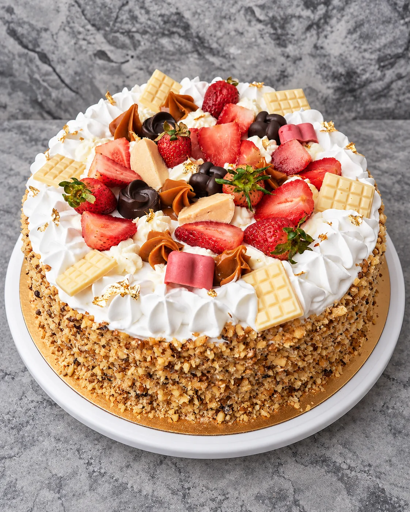
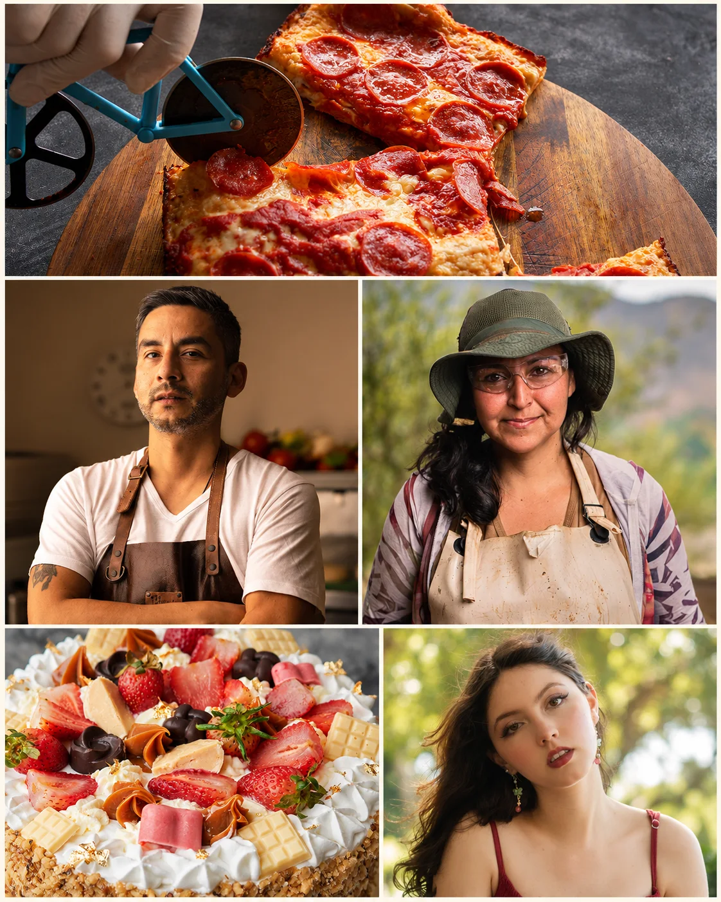
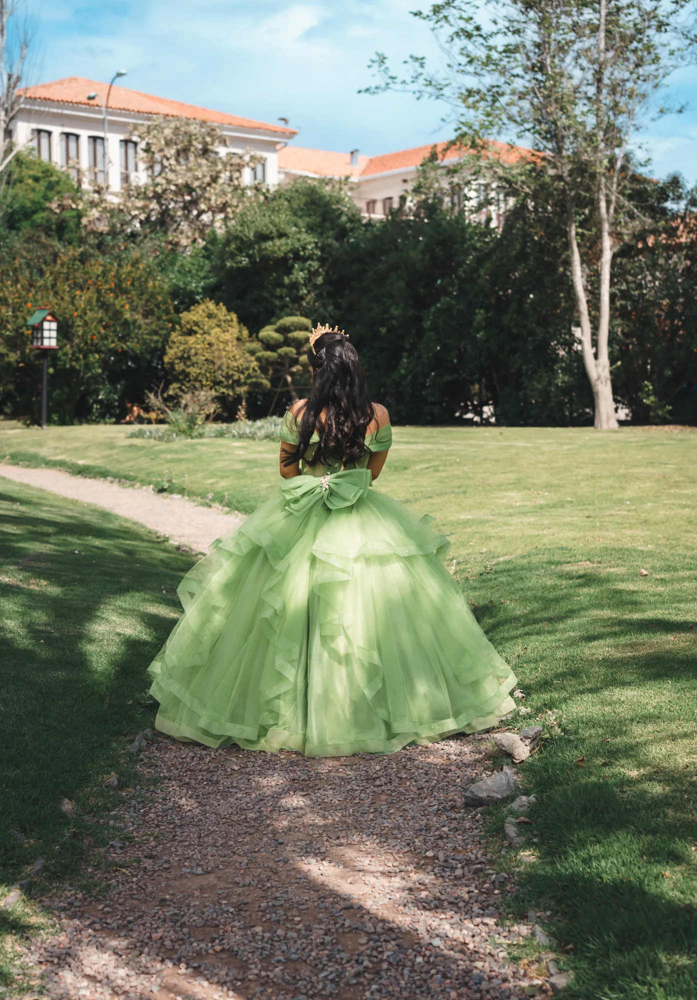

Gastronomía
Platos, bebidas y detalles que transmiten la identidad de tu cocina. Para restaurantes, cafeterías y emprendimientos.
Fotografía de gastronomía y producto para mostrar tu marca con intención, detalle y personalidad. También, personas e historias que merecen recordarse.
La Serena y Coquimbo

Explora lo que podemos crear para tu marca o para ti.

Platos, bebidas y detalles que transmiten la identidad de tu cocina. Para restaurantes, cafeterías y emprendimientos.
Texturas, formas y pequeños detalles. Imágenes para mostrar tus productos en catálogos, tiendas y redes sociales.

Retratos, sesiones creativas y celebraciones. Fotografías para guardar tus momentos y tu forma de ser.
Detrás de Pixelados está mi forma de observar: curiosidad por los detalles, por la luz y por aquello que hace especial a cada persona o proyecto. Me gusta crear imágenes cuidadas y cercanas. Cuéntame tu idea y le damos forma juntas.
Cuéntame tu idea ↗Conversamos sobre lo que necesitas, el uso de las fotos y el estilo que imaginas. Recibes una propuesta con el alcance y los valores.
Acordamos fecha, lugar y preparación. Confirmamos la reserva y lo necesario para aprovechar la sesión.
Realizamos la sesión. La selección, edición y entrega digital se coordinan según el servicio y los plazos acordados.
Cuéntame qué quieres fotografiar, para qué necesitas las imágenes y qué fecha tienes en mente.